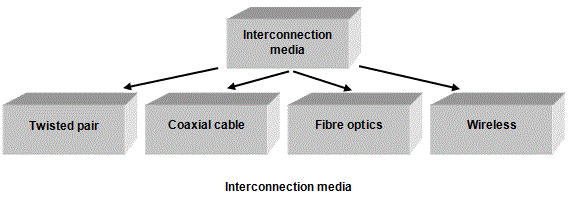
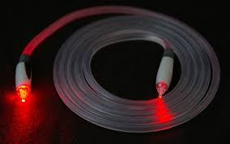

<div id="jsn-maincontent" class="span9 order1  row-fluid">
					<div id="jsn-maincontent_inner">
						<div id="jsn-centercol"><div id="jsn-centercol_inner">
									<div id="jsn-mainbody-content" class=" jsn-hasmainbody">
								<div id="jsn-mainbody-content-inner1"><div id="jsn-mainbody-content-inner2"><div id="jsn-mainbody-content-inner3"><div id="jsn-mainbody-content-inner4" class="row-fluid">
								
										
								
								<div id="jsn-mainbody-content-inner" class="span12 order1 ">
		
										<div id="jsn-mainbody">
										<div id="system-message-container">
	</div>

										<div class="item-page" itemscope itemtype="https://schema.org/Article">
	<meta itemprop="inLanguage" content="en-GB" >
	
		
						
		
	
	
		
								<div itemprop="articleBody">
		<p></p>
<h1 style="text-align: center;">Hard-wired network interconnections</h1>
<p><strong class="NormalContentHeading">Interconnections</strong> <br> When connecting together computer hardware, you have to decide how to connect them. The final choice will depend upon a number of factors including:</p>
<p align="center">&nbsp;</p>
<p>We have seen that you need to consider certain things before deciding on the interconnection method.</p>
 
<ul>
<li style="list-style-type: none;">
<ul style="list-style-type: disc;">
<li>The predicted bandwidth.</li>
<li>The environment that the interconnections will exist in.</li>
<li>The distance between clients.</li>
<li>The level of security needed.</li>
<li>The cost of the interconnections.</li>
</ul>
</li>
</ul>
<p>Computers on a network can be connected up using different media. Some possible media include:</p>
<p align="center">&nbsp;</p>
<ul>
<li style="list-style-type: none;">
<ul style="list-style-type: disc;">
<li>Twisted Pair.</li>
<li>Coaxial cable.</li>
<li>Fibre optics.</li>
<li>Wireless connections (including satellite).</li>
</ul>
</li>
</ul>
<p><strong class="NormalContentHeading">Unshielded Twisted Pair copper cable (UTP)</strong><br> Many networks use UTP cable. It is very light, flexible and cheap and has been around a long time - installation engineers are familiar with it. It is used extensively in the home to connect up the telephone system! It consists of pairs of conductors covered in insulation material and then twisted together. Within one cable, you might have 4 pairs but there are different designs, each with their own characteristics.</p>
<p>Twisting wires together reduces the effects of electrical interference at minimal cost. Twisting is helpful but you can provide even more shielding from interference by using a silver foil wrapped around the cables. Although you can certainly buy STP (Shielded Twisted Pair) cable, UTP is perfectly sufficient for many networks.</p>
<p>Importantly, the bandwidth for UTP isn't as high as for coaxial or fibre optic and you need repeaters more often with UTP than coaxial or fibre optic cable. For many 'standard' networks in a building, however, it is the cable of choice because of its cheapness, adequate-for-the-job bandwidth, sufficient resistance to electrical interference and easy installation.</p>
<p><strong class="NormalContentHeading">Coaxial copper cable</strong><br> It is made up of a central conducting core covered with some protective insulation. Wrapped around the insulation is a thin metal sheath that provides the electrical interference protection. Finally, the cable has an outer covering. Coaxial cable is the cable used to connect your television aerial to the television.</p>
<p>It is heavier and less easy to manipulate than UTP. It is also more expensive. You can have longer cable runs than for UTP but still not as long as for fibre optic. This means that you may need fewer repeaters compared to UTP cable, but more than for a fibre optic cable. It is mechanically strong and resistant to interference.</p>
<p><strong class="NormalContentHeading">Fibre optic cable</strong><br> This consists of a glass core wrapped in protection within a cable. Data is sent down the fibre optic cable as light, not electrical signals. The signals therefore don’t suffer from electrical interference. Fibre optic cables are also resistant to the effects of moisture because they are non-metallic, unlike conventional cables, which are metal-based. The cables themselves are very brittle when compared to conventional metal-based cables and need to be well-protected.</p>
<p>Fibre-optic communications is high bandwidth compared to e.g. UTP. For this reason, it is selected for networks where &nbsp;video-conferencing will be needed. The price of fibre optic cable has dropped rapidly in recent years so that it is comparable to metal-based cables. However, installing it and any modifications or repairs do need specialist engineers and this makes it relatively expensive to install and modify.</p>
<p>Fibre optics connections are often used for the ‘backbone’ of LAN networks. This means that they are used to connect the servers to the main switches, which are located in different areas where there are clusters of computers. From the switches, normal coaxial or twisted pair connections are made. Data transmission speeds of 1Gbit/s are easily reached using fibre optics connections.</p>
<p></p>	</div>

	
							</div>

									</div>
				
							</div>
							
				        							
							
							</div></div></div></div></div>			
							
							
		        				</div></div> 
				</div></div>